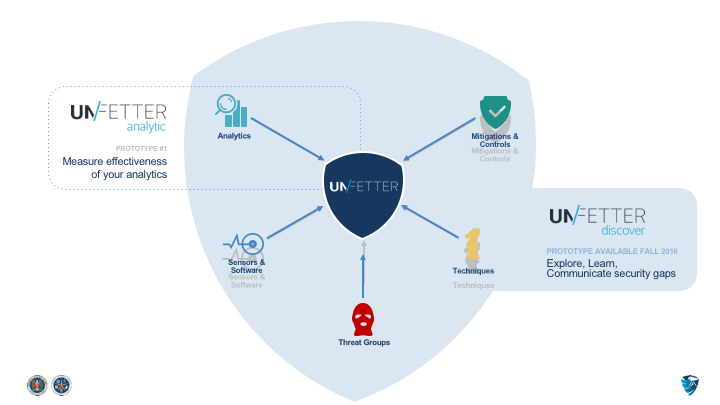
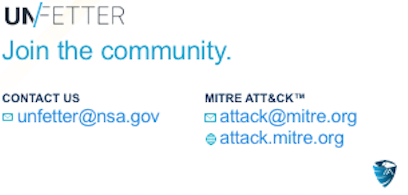

When the threat hits, cyber security professionals working at the tactical, operational, and strategic levels need to work together quickly and effectively to enable a common cyber security strategy and protect against the adversary. The ability to do this in a repeatable and scalable way depends on an organization's agility to discover gaps in their security posture, understand adversary tradecraft, and communicate defensive courses of action.
The MITRE Corporation has done significant research in this space and has a proven methodology built on their Adversarial Tactics, Techniques, and Common Knowledge (ATT&CK™) framework. The vision for Unfetter is to create a community-driven suite of open source tools that leverage models like ATT&CK™ to help cyber security professionals explore and analyze gaps in their security posture. This suite of tools provides a way for users to build on insights and make informed decisions based on data driven trade space analysis. Our initial prototype, Unfetter|Analytic, is a reference implementation of a platform designed to help analytic developers experiment and gain familiarity with the ATT&CK™ framework as a means of measuring the effectiveness of analytics.

Our next prototype, Unfetter|Discover is aimed at helping the user explore additional gaps across their security posture and experiment with next steps. The initial focus is on mapping mitigations and security controls to ATT&CK™ and demonstrating how to explore, learn, and communicate between tactical, operational, and strategic levels of operation.
